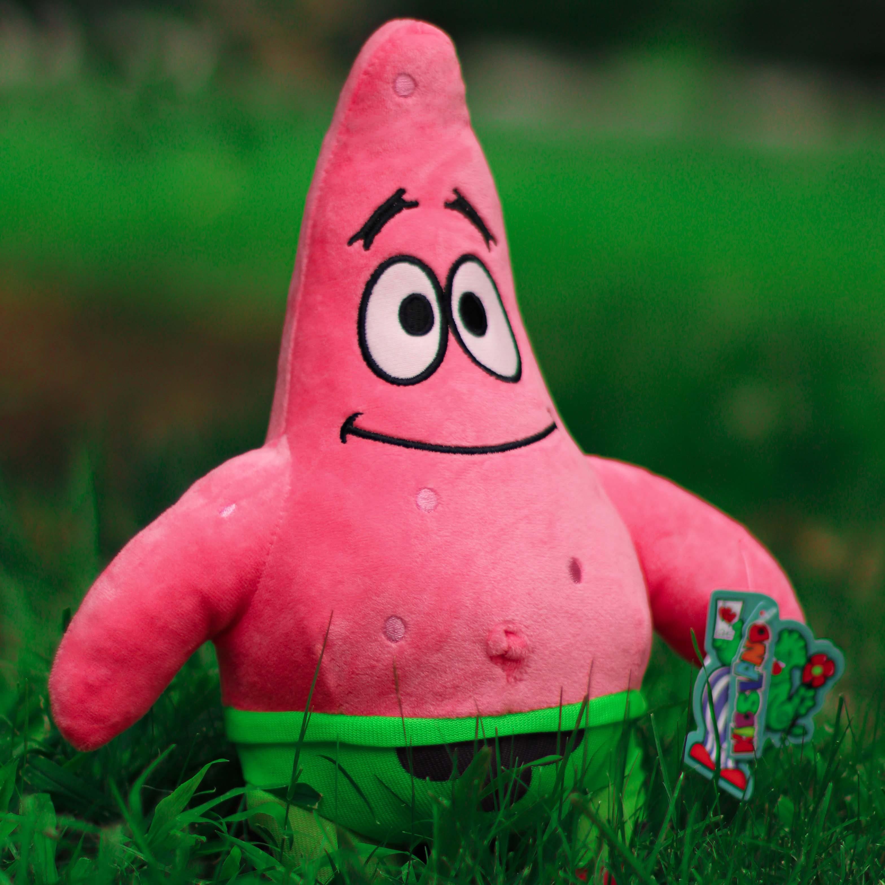

Life of Patrick Star
This is not a fan page, but a collection of questions and observations on our stellar friend. Patrick is an anomaly; A starfish like no other. I've never been able to figure out how he manages to find space between his rock and the sand-bed. (Does the rock collapse in itself from the inside, or does the sand open up everytime he steps in?) Nor will I ever be able to figure out why he lives under a rock in the first place. I like to think that Patrick is an INF-J type of starfish, and that the rock which he calls his abode is his quiet place for self-reflection and meditation. He probably contemplates the meaning of life at the bottom of a bikini; with no fellow starfish and an annoying sponge for a friend, who lives in a pineapple, is absorbant and porous, into nautical nonsense, and drops on decks and flops like a fish. And let's not forget that annoying flute-thing he does with his nose. Yes, I think Patrick is having an existential crisis. The pessimistic squid would probably make for a better Albert Camus character, but let's just pretend that this enlightened starfish does something deeply profound under his rock. Because I cannot imagine him not doing anything... and I don't want to lose sleep over it. One more thing: are there others who do the living-under-a-rock-thing? Are there 2-beds, duplex and premium rocks in posh choral beds? Is Patrick's rock an economical studio? Just one space. Real estate-wise, I think the sponge got a better deal. At least his pineapple has rooms. I don't think I've obsessed over a rock like this before. With the rate at which housing costs around the world are increasing, we may all start obsessing over rocks very soon. Anyway... let's stick to the starfish!